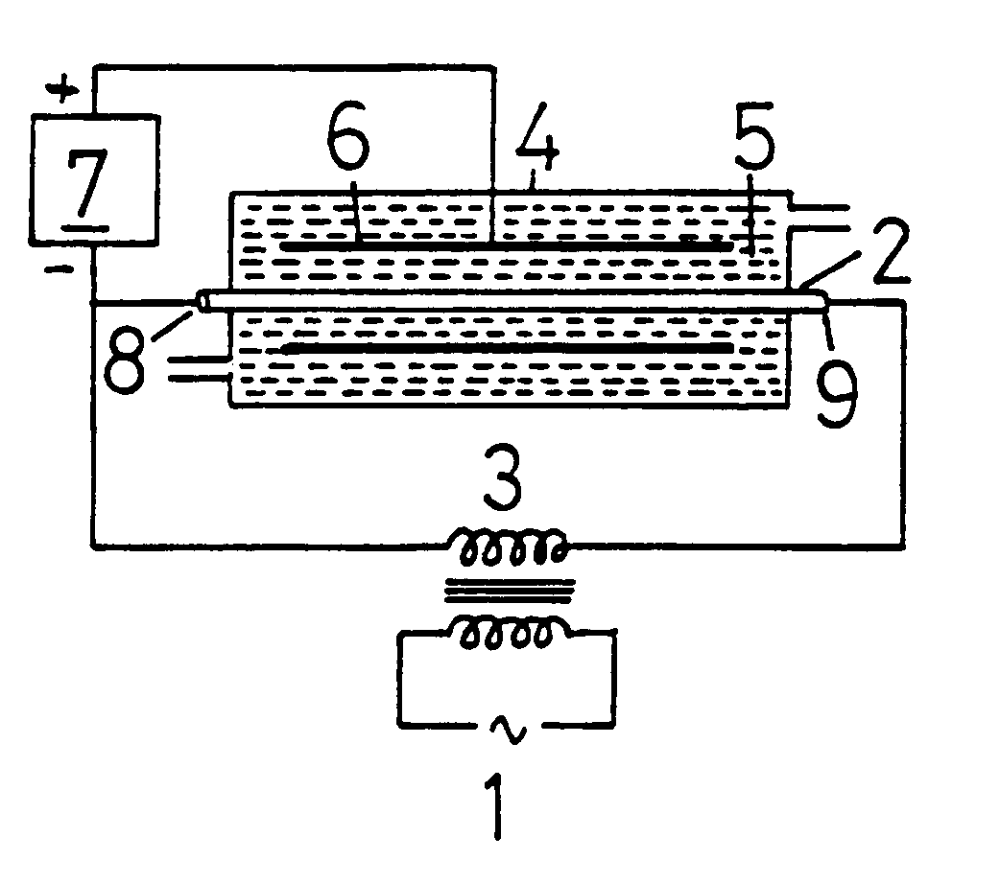
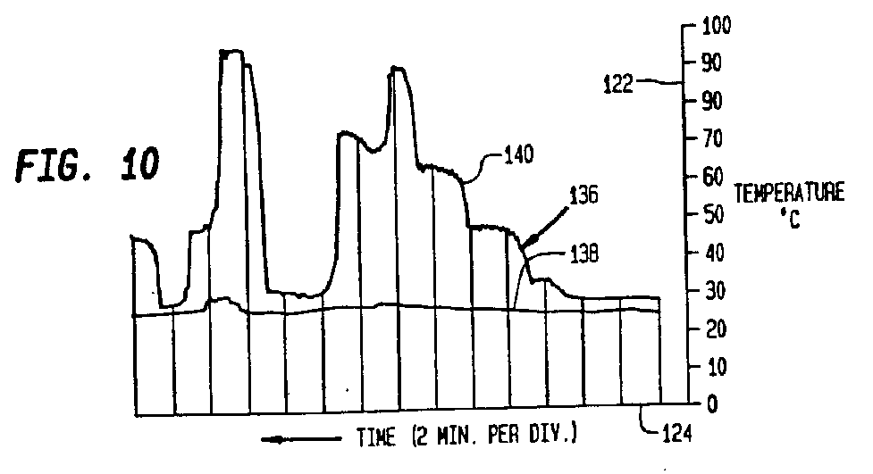

Abstract: My story is about the shameful way in which the United States Patent Office has treated my application for the grant of a patent concerned with what has come to be known as 'cold fusion'. It spans the first decade of science history that will come to be written about the cold fusion saga. My voice is that of a European Patent Attorney who, in retirement from long service as IBM's European Director of Patents, returned to academia to pursue a lifelong research interest in energy science. I speak with authority on my subject, as both a patent expert and an inventor, and I say that the United States Patent Office has acted shamefully in the handling of my 'cold fusion' applications!
Judging the merits of an invention is a specialist function, the province of a specialist profession. These specialists are not lawyers practicing their legal skills. They are not scientists of the kind one meets in academia. They are men and women who have opted for a career in one of two pursuits, one being that of the government official, the patent examiner, and the other being that of the 'agent' who writes the patent specification covering the invention and negotiates with the patent examiner to secure the eventual grant of the patent.
Both of these roles are very demanding in those countries that set high standards of patent examination, based on a comprehensive international patent search, and those involved need to have considerable technical knowledge to underpin their legal training in patent law. That patent 'agency' training is not just concerned with book knowledge, the statutes and rules of the subject, but the hands-on experience following an initial period of personal tutorship of learning how best to define and present an invention before it begins a journey encountering the unexpected pitfalls that the patent examiner sees as obstructions standing in the way of grant.
The ingenuity, experience and skill required of the patent 'agent' are much more demanding than are those of the patent examiner, but both need to be equally skilled in technology and science, albeit with some speciality bias, typically as between the chemical and engineering fields and, at the extreme, as between the biochemistry of the drug industry and the electronics of the computer industry.
One must here keep in mind that the patent profession is kept busy by the ongoing struggle to protect inventions by securing patent grant. Very few inventions ever mature to the stage where they become contentious issues in a court of law. Patent suits to enforce one's rights against infringers are rare events, but the 'attorney' role has a part to play in that the person who writes the patent specification and formulates its claims has to anticipate the pitfalls of life, even after grant, just in case the patent finds itself in an infringement suit.
Now this introduction may seem to be tedious, bearing in mind we are going to discuss a cold fusion case, but my tactics here are deliberate. I want the reader to be under no illusion that the interaction between a patent agent and a patent examiner in processing a patent application is a routine exercise, merely involving completing forms and going through a few editing formalities.
I want further to 'educate' a little concerning the nature of the patent system, before I come to the details of my 'cold fusion' experience. We will, however, bring that theme under a new heading.
When you reflect on that and on the often-debated thought that patents could be granted for computer software, you could well wonder whether patents serve any useful purpose. Even without regard to patentability in a technical and legal sense, just ask yourself how an attorney can ever understand the machine code and decipher the routines and sub-routines operative in a computer program so as to be able to explain to a client what they cannot do if they are to avoid infringement. The attorney cannot say simply: "Do not copy." You do not have to copy what is in a patent to be liable for infringement! If you design something without any prior knowledge of what is the subject of a patent and you just happen to have trespassed on territory you have never seen, you can still be liable for infringement of a patent. Ask yourself how that attorney can describe the detailed operation of the invention in a specification, given that there is no sense in just dumping a print-out of machine code and hoping that the patent examiner can check it against all past computer programs to see if it really is new. Ask yourself, how soon, if we sink into that abyss, the patent system will crack up and destroy itself.
We have a patent system today, but if you think patents are intended to reward the inventor, then you are wrong. If you think they are granted to allow the inventor or his assigns to manufacture and use what has been invented, albeit for a limited time, then you are quite wrong. No, all a patent does is to confer the right to obstruct. Your reward for making an invention, contesting its merits successfully against an obstructive patent examiner, and incurring considerable expense in the process, is no more than the right to stop others from exploiting your invention for their sole benefit.
To assert that right you must first have the good fortune of finding that someone has appreciated the merits of your invention sufficiently to set about making and selling products incorporating the invention. As an inventor you should be pleased to see your brainchild working for the service of mankind. However, your patent sows the seeds of discontent once you see a trespasser and your sense of greed is aroused as you feel obliged to assert the rights which your government have conferred upon you.
You must, however, have the good fortune of discovering that early enough for enforcement to be of any significance. Chances are that after a few years of paying renewal fees, which escalate progressively over time, you have ceased payment long before the end your 20 year patent lifespan and the patent is no longer in force.
Should your patent still be alive, you must then have the good fortune of possessing sufficient resources to be able to pay for the very high legal costs that you will encounter if you consider court action. If you go ahead, you must have the further good fortune of finding that what you think is your invention is really what the judge comes to think is covered by your patent claims. Besides that you need the good fortune of finding that the judge accepts your case that what the infringer is actually doing is within the scope of your patent claims, as he, the judge, interprets those claims. Then you need the good fortune of finding that the victims of your attack have been left high and dry by their own patent attorneys being unable to discover something that the patent examiner might have missed in his official search. There is a saying: "Seek and ye shall find." and, to be sure, you will have a case to answer because the validity of your patent will surely be challenged.
Then there is need for further good fortune, which is that the judge, who is normally trained in law, rather than as a physicist or chemist, far less as microbiologist or computer specialist, will understand the technical merits of your claims sufficiently to form a fair judgement. By 'computer specialist' I do not mean someone who knows how to use a 'mouse' or press buttons on a computer keyboard or 'surf the net'. I mean someone who knows what is inside those microchips, how to configure their circuit patterns and the reasoning of the design of those circuits.
You need the further good fortune that your expert witnesses will be more helpful to your case than the infringer's expert witnesses are adverse, and further that the judge will not get too bored with the technical proceedings and the protracted court time involved, so that you have the good fortune of not seeing the costs escalate beyond reason. In summary, you need good fortune, and the good fortune of making an invention on which you eventually secure patent grant is only your first stepping stone along a very hazardous path.
What is so stupid about the whole patent system which the world tolerates is the futile effort of processing patents through examining patent offices before one knows whether the inventions involved have any commercial value. Yet the inventor cannot publish and then apply for a patent later when he knows that the invention, thanks to his contribution, has proved useful, whether to him or others. He would find that his own publication had anticipated his right to seek his patent monopoly.
How much better it would be if an inventor could publish his invention freely, subject to authority from those funding the research leading to the innovation, and leave it for destiny to decide the utility of the invention. Those patent specialists need not come into the act at all, until someone, the inventor or those who have funded the development of the invention, decide to stake their claim for a reward. This would not be a claim for the monopoly right to stop others from using the invention, but a claim against the government in the country of use, seeking their tangible appreciation for having contributed to the success of the national economy. Any successful invention earns money for those who manufacture. It benefits mankind. Commercial success means that there has been some profit which surely attracts tax revenue for the government. So why not provide for a procedure by which the Patent Office can confer patents on what an inventor has already published, aimed solely at recognizing the merits and originality of an invention based, as now, on a precise definition of what lies within the scope of the invention? There will still be work for those patent agents and patent examiners. Then, patent in hand, the owner of the rights can, every two or so years for a limited period, get his accountants and lawyers to assess the commercial value. The government revenue authorities would then weigh the case, allowing for the situations where research and development costs involved government funds, as normally applies if the invention is born in a university. The case showing the benefits of the invention would include the commercial success of those who had trespassed in the use of the invention, but they would not be penalized. They, too, will have paid their taxes, so, the revenue authorities being the only beneficiary, it is proper for them to confer on that patent owner a right to a remission of tax or refund commensurate with the true value of the invention.
The special circumstances of the drug industry would need to be treated differently, as by adhering to the present patent system, given that it works well for that industry. However, it works not at all well for the majority of the technological fields of invention. The patent system gets by at the present time, because there is a degree of tolerance and a powerful professional rapport between those who work in the patent field, a rapport which bridges national boundaries, but so much intellectual power goes to waste Even so. Inventors seldom find reward for their endeavour, but they do take pride in seeing their inventions recorded in a granted patent. My point is that the patent need not be a monopoly right, but should really be a right to a reward if the invention achieves commercial success.
Governments tend to assume that inventions are a product of industry and so industry should pay for the rights those inventions confer. It is a sad situation, one in which the governments encourage companies to acquire weapons which can only be used to obstruct competition. Why cannot the governments intrude to regulate competition where inventions are concerned and let that intrusion take the form of preferential rewards which benefit inventors and those who fund the work of inventors?
I will begin by noting that it all began in the weeks immediately following the announcement in USA that Professors Martin Fleischmann and Stanley Pons had discovered something rather remarkable. The implication was that atomic nuclear fusion might be possible for heavy hydrogen adsorbed into a palladium cathode operating in an electrolytic cell at room temperature. Here was the possibility of something that could shake the world and perhaps help to solve our future energy problems in a quite wonderful way. Martin Fleischmann's professorship was at Southampton University in England. I had retired in 1983 to become a full-time Visiting Senior Research Fellow engaged on energy science research at that same university, the university local to my home. My office and laboratory facilities were in the Faraday Building of the Department of Electrical Engineering, in very close proximity to the Department of Electrochemistry, the discipline of Professor Fleischmann.
I had no prior knowledge of Fleischmann or his work, but my mental faculties were duly aroused when I heard the news from Utah, the venue of Stanley Pons. That was in the March/April period 1989.
There are special reasons for my exceptional interest in this news item, apart from what has just been mentioned. I explain that elsewhere in these pages. See: Hadronic Journal article 'The Theoretical Nature of the Neutron and the Deuteron'. However, here we are concerned with patents and I wish to stay with that theme.
Obviously, being a patent expert and having my own research ideas on generating energy by rather unusual means, I weighed the position confronting Fleischmann and Pons. They would surely be subject to constraints concerning the patent situation. They would probably have filed one or more patent applications covering their process by method claims. The emphasis would be on the electro-chemical features. Was there scope for invention in suggesting something quite new and very relevant in the design of the apparatus needed to operate a cold fusion cell?
That was my problem. I knew no more than what was emerging from the publicity surrounding the event in Utah. I soon became conscious that the university authorities at Southampton were feeling a little uncomfortable and it seemed to me that they would try to avoid comment. Their Professor Fleischmann could speak for himself. The Physics Department at Southampton was running on a conventional track. Nuclear physics was high energy physics. To suggest that there could be a nuclear reaction without neutron emission, as seemed to be implied from this cold fusion discovery, was simply not something that could be reasonably contemplated. So, the university posture was 'low profile'.
My freedom to invent was unfettered by my university connection. My research facilities had been funded by an IBM donation to the university as part of my retirement package. I was free to seek patent cover for my own benefit at my own expense and I grasped the opportunity. I acted quickly and filed three patent applications at the British Patent Office in rapid succession, all in March/April 1989. All were on the theme of cold fusion and all were based on the foundation stone I had seen laid by the efforts of Fleischmann and Pons. It was a gamble. I knew that there would be a rush to file patents and here was my chance to project what I had been working on myself as my research subject. That was how it all began. I could never, ever, have believed the fiasco we were to witness later, if I had encountered the truth in a dream concerning the future!
It really is not for me to describe the whole picture of events. A very comprehensive account published in 1991, just two years from 'start date' is that of Dr. Eugene F. Mallove in his book: 'Fire from Ice', ISBN-0-471-53139-1, published by John Wiley & Sons, Inc. It title caption reads: 'Searching for the Truth Behind the Cold Fusion Furor.'
I was not 'searching for the truth'. I was experiencing my own problems and the truths I 'knew' about, first-hand, were my information source.
Now, I am going to jump ahead in a kind of quantum leap to mention a U.S. patent that was issued to James A. Patterson on June 7, 1994. It includes in its list of cited references, a paper entitled: 'Measurements of Excess Heat from a Pons-Fleischmann-Type Electrolytic Cell Using Palladium Sheet', published in Fusion Technology, vol. 23, March 1993. Note, however, that there is now a related, later-granted Patterson patent, U.S. Patent No. 5,672,259 and I shall be referring to that in Essay No. 10.
I further note that the abstract of the Patterson patent issued in June 1994 declares that it covers an electrolytic cell and method for electrolyzing and heating water contained in a conductive salt in solution. Heavy water in the electrolyte features in some of the test data. There is evidence in the test data of spurious phases where excess heat is generated. The electrical power fed to the cell promotes a flow of electric current through a stack of metal-coated beads immersed in the electrolyte. The metal on those beads has adsorbed protons or deuterons from the solution.
Another point concerning this patent is that Patterson applied for it by a filing dated July 20, 1993 and it was granted, with remarkable speed, on June 7, 1994.
I want you to keep that in mind when you take stock of my story concerning my U.S. patent applications bearing upon cold fusion. Note that Patterson's application was, seemingly, classified for examination by an examining group separate from that assigned to handle cold fusion cases.
Now, I will come back to the relevance of the Patterson patent presently, but note here for the record that it is U.S. Patent No. 5,318,675.
I am writing this in late March, 1998, nine years from the cold fusion 'start date'. That Patterson patent, with its brief but quite successful 1993-1994 journey of less than one year through the U.S. Patent Office, came on the scene midway between now and our 'start date'.
Keep that in mind, because you should begin to wonder why we have not seen other 'cold fusion' patents issued by the U.S. Patent Office over the past nine years.
Now, let me tell you about my three inventions of March/April, 1989. As I have indicated, they were all based on a speculative gamble, but I was guided by my research interest, which concerned how heat could convert into electricity within a metal in breach of the normally-accepted interpretation of thermodynamic law and certain anomalous effects associated with that activity.
Whether in the patent literature or in respected scientific periodicals, I had written about the anomalous acceleration forces known to exist when heavy ions, as opposed to electrons, carry electric current between an anode and a cathode. I am not talking here about a gain of a few per cent, but a gain of 100 or 1,000 times! Even in hot fusion research it was known that energy could transfer anomalously from electrons to protons with a 1,000-fold discrepancy as between theory and experiment. What was not known to those in hot fusion research was why those protons acquired that excess energy. The researchers just assumed that it must come from the power source driving the electrons.
So that was the scene in March/April 1989. However, long before that, some thirty years before, I had discovered that, to unify the form of the law of gravity and the law of electrodynamics, one would need to modify our interpretation of the empirical evidence concerning electrodynamic interaction forces. There would need to be scope for setting up an out-of-balance force in circumstances which eluded the gravitational action but did not elude electrodynamic interactions where there was a lack of continuity in the current circuit. That led me to explore how that force anomaly might arise where current is carried in a closed circuit by electrons exclusively in one segment and by protons, partially, in the remainder of the circuit. The result implied an enormously escalated anomalous acceleration of protons driven into the cathode plus the problem that, to keep faith with Newton's Third Law that action and reaction are equal and opposite, I needed to accept that the aether itself was able to assert a force and shed energy.
I was, therefore, no longer standing on that 'secure' platform of knowledge shared by academia in science. I knew there was something shaky about its foundations and so I went looking for that firmer ground. I had my living to earn in a conventional discipline and found my way into the patent profession where I was at the forefront of innovation, initially in the electrical power industry but later in the computer world of IBM.
However, my scientific interest was my obsession. With a Cambridge Ph.D. in Electrical Engineering for research on the anomalous energy properties found in magnetizing steel, I knew I could pursue a career in research or teaching, but I would be just a fish in a deep sea. I preferred to keep my head above the surface and navigate accordingly, which I why I floated into the world of patents.
That said, and moving on those 30 years to when I had retired from my corporate venue and dropped back into that ocean of academia, I felt a kind of resonance building up when I experienced the vibrations set up by that tidal wave launched by Fleischmann and Pons.
The question I asked myself was whether deuterons inside a liquid electrolyte as part of the ion D3O+ or even in a metal conductor, as heavy ions (bare deuterons) in a sea of electrons, could suffer anomalous acceleration forces tapping energy from the aether. If not that, then could those forces suffice to drive a deuteron into collision with one held at rest? That might cause fusion and then the anomalous heat could be nuclear in origin. Furthermore, since I had the impression that searching for that heat was like searching for food where none exists, I felt that, to get something to grow and escalate into a spontaneous blossom of power, one ought to seed that growth. By this I mean that, if the excess heat was generated within the cathode, one should send some electric current through the cathode, current that is not part of the current flow in the electrolytic circuit. This must surely stir action, if it needed something to trigger the ion combination and it would require very little energy input to sent current around a closed all-metal short-circuit. Certainly what I knew, from my research on the electrodynamic law needed to support the unification with gravity, told me that, the higher the current in a closed circuit confined to a metal cathode, the greater would be the anomalous acceleration of those deuterons adsorbed into the cathode.
I realized that this meant adding some heat and that seemed unnecessary if generating heat was the objective. However, I knew that invention has to have an element of surprise and avoid what is deemed obvious, whilst, of course, being founded on something workable. Here was my difficulty. I did not have the resource to test my ideas experimentally. So, my tactics were to file my patent applications and watch events. I would be on the look out for evidence of progress on the cold fusion scene to see if problems were encountered which could cast light on what I had claimed and perhaps add weight to my beliefs.
Whether I would have started along that road of trying to secure patent cover for a 'cold fusion' invention, had I known the problems I could have with the United States Patent Office, I just cannot say. Certainly, I do not go looking for trouble when all I have to wave on the battlefield is my own flag and no demonstrable research armament to back me up.
As a side remark here, I just note that when a U.S. Patent Examiner confronts a situation where he is really intent on stopping that flag from claiming the monopoly territory of an issued patent, the normal tactic is to ask for a show of strength, namely ask to see some evidence of that armament strength. The examiner asks for authenticated reports by those who may have witnessed the operation of the invention. That may or may not end the contest, but in my case I would probably have withdrawn at that point. In the event, however, I was confronted with an examiner who decided to play me out to the point of exhaustion by, in effect, telling me to wave a series of smaller flags and advance under one of those flags as a first step. This was followed by telling me that the territory I had in mind claiming was already occupied or said to be uninhabitable by others who wandered onto the scene long after my entry, even though the territory I had in mind was still vacant and sound.
In effect, I felt that the U.S. patent examiner was acting under orders from a general somewhere in the background. The order seemed to be: "Do not ask for evidence. Just let no one pass and fight to their death."
Well, you will see what I mean when I present the case history of that U.S. Patent application.
As to my three initial 'inventions', I filed my first patent application at the British Patent Office on March 31, 1989. It was accorded the filing number 8,907,249. This was based on the anomalous acceleration effect occurring within the heavy water electrolyte and the apparatus described comprised a multiple anode array positioned around a central cathode with the electrolytic current being a pulsed discharge jumping between anodes in a timed sequence. My specification was 30 pages in length and contained 17 claims.
In the event, however, as I read more about the Fleischmann-Pons work, as it became available later, I decided not to proceed with this patent application. It seemed more probable that the anomalous heat generation was occurring within the cathode.
Meanwhile, however, by April 15, 1989, I had filed my second patent application at the British Patent Office. It was assigned the filing number 8,908,571 and it was eventually published and granted as GB Patent No 2,231,195. It was granted with 17 claims and there were no citations of prior art raised by the examiner from his international search efforts.
The scope of the invention can be judged by the official abstract of the patent and Fig. 1 of the patent specification, as reproduced below:
The process by which deuterons adsorbed into a palladium cathode to generate heat energy is enhanced under the control of an electrical current flowing around an all-metal circuit including the cathode. The current is an a.c. current very much greater than the ionic anode-cathode current involved in deuteron adsorption. It causes adsorbed deuterons to excite fusion-triggering vacuum energy fluctuations when traversing field boundaries inside the cathode in the presence of a strong electron counterflow. Deuterium may be adsorbed into the cathode by electrolysis or by corona discharge.

The reason for that was that my research interest had spread to embrace the anomalous energy activity associated with 'warm superconductivity' and that research was telling me that deuterons as part of a water molecule were more active in a thermal gravitational sense than those which had merged with a heavier atom, given the right overall mass condition. If that surplus energy was being shed then that might explain the anomalous heat generated. You see, in April 1989, one did not really know why excess is generated in the Fleischmann-Pons cell. Fusion was just one of the options and, indeed, we have, in 1998, yet to settle the true question as to the excess heat source. That, however, is no reason for blocking the patenting of novel devices used for testing how that heat can best be generated.
However, the main thrust of the patent concerned that short-circuited turn on the secondary of the transformer, that short-circuited conductive path being through the body of the cathode without involving any significant current passage through the electrolyte, the latter being served by the d.c. fed to the anode-cathode circuit.
The third patent application was filed at the British Patent Office on April 18, 1989. Its official application number was 8,908,670. This, in a sense, aimed to combine the subject of the two prior applications by describing apparatus which suggested an advantage by pulsing the electrolytic discharge in synchronism with current pulsations through the closed metal conductor path through the cathode circuit.
For the record I present here Claim 1 of that application:
Ion fusion apparatus, in which a current of hydrogen isotopes flows into a metal conductor, comprises means for passing an electrical current through the conductor independent of and in addition to the electric current attributable to the inflow of isotopes and means for regulating the strengths of the two electric currents, characterized in that both currents are caused to flow simultaneously for successive short periods at strengths which are substantially in excess of their mean current values.
Once lodged at the British Patent Office, these three patent applications could lay dormant for up to one year pending decision to proceed by formally seeking examination and patent grant, whether in U.K. or by filing in other countries. In the event, I abandoned the latter application along with the first and decided to proceed with the one having the April 15, 1989. I restricted overseas filing to a single application in USA, the one that initiated the 'saga'.
The British application proceeded through its patent examination with no difficulty whatsoever, there being no prior art of relevance, and so it was that the patent was granted as British Patent No. 2,231,195. The grant date was January 13, 1993. Its grant was reported in 'FUSION FACTS' in the April 1993 issue.
Once it became evident that independent researchers were unable to reproduce the excess heat of the Fleischmann-Pons cell by enclosing the apparatus in a housing for calorimetric measurement so as to get a proper measure of temperature by assuring it is uniform, I suspected that they had actually 'killed the goose that was laying golden eggs'. My thermoelectric research interest and my knowledge of anomalous energy effects in power transformers was my inspiration. Maybe a temperature gradient in the cathode was essential. I had good reasons for suspecting this. So I was on the look out for evidence of fluctuation cathode temperatures in conjunction with anomalous heat generation.
Run a cell aiming for perfect steady-state operation and you will kill the chance of generating excess power. Make things a little difficult in a measurement sense by allowing temperature to fluctuate up and down to keep heat flowing anyway, or set up a temperature differential as a steady state condition of the cell, and you could find that excess heat appears.
Now take a look at Table III in the Patterson patent and Fig. 10 which applies to the data in that table. If you inspect the printed specification of Patterson U.S. Patent No. 5,318,675 you will see that he has tabulated a series of tests giving a measure of power output in units that are different compared with those used for electrical power input. The heat output is stated as a change in temperature in degrees C times a water flow rate of milliliters (ml) per minute. Input electrical power is given in watts. 60 ml/min times T, as a temperature difference, is a rate of T calories per second or 4.2(T) watts and so, to have over-unity performance, meaning 'excess' heat, we must have an output of more than 14.3 of these heat units per watt.
For most of the data presented by Patterson, as for his tests on normal water, and for test periods using heavy water, the heat output measured did not match up to the electrical power input, indicating that some heat was being conducted away and escaping the main measurement track or that the tests underestimated the heat generated. However, particularly for table III, once the flow rate was increased sufficiently, the data reveal spurious states such as one where the heat output was as much as 103.6 units versus an electrical input of 2.11 watts.
This indicates operation with 340% efficiency! Here, then, is data indicating the excess heat can be produced by a cell operating somewhat along the lines described by Fleischmann and Pons.
Now my purpose in drawing attention to this is the fact that the generation of this anomalous excess heat occurred as the temperature profile of the cell was fluctuating. That can be seen from Fig. 10 of the Patterson patent.
Now look at that figure:

As you read more about my patent struggle with the U.S. Patent Office, you will come to see this feature stressed again and again. What surprises me is that so little has been reported of research on cold fusion specially directed to keeping cathode temperature non-uniform. Yet so much has been written about negative tests which go out of their way secure a precise measure of heat generated by keeping temperature steady for calorimetric purposes. I say that those who perform such tests are simply 'killing the goose that lays the golden egg', and I will not feel content on this issue until someone assures me that the 'however you inject heat to warm the goose it will still not lay those golden eggs'.